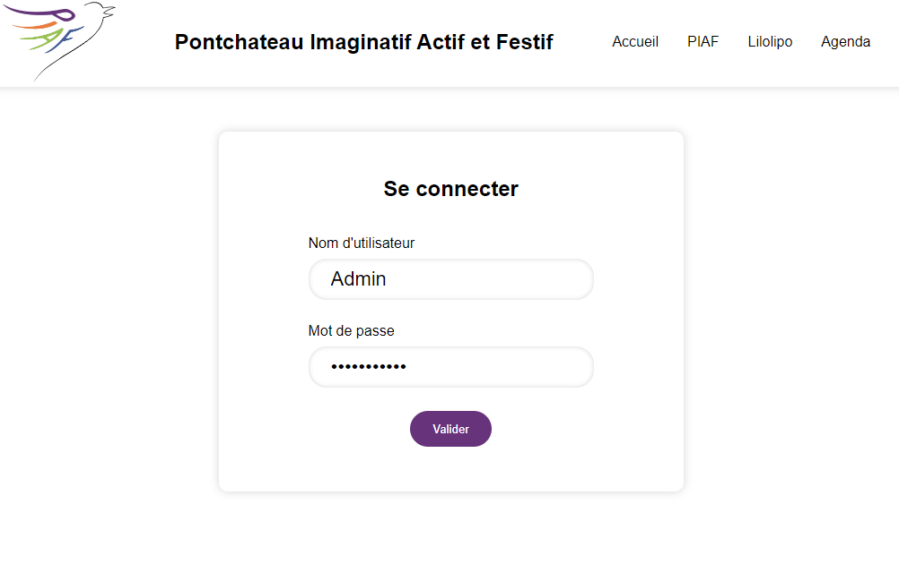

Mission principale
La principale mission qui m'a été confiée au début de mon stage est la refonte du site web de
l'association. C'est-à-dire moderniser le site, corriger les potentiels problèmes et enfin améliorer
l'expérience utilisateur.
Procédure
Dans un premier temps, sur une journée, j'ai découvert le site web, comment il est construit,
l'expérience utilisateur que j'ai eu dessus afin de déceler les premiers axes d'améliorations.
Première maquette
Pendant les deux premières semaines de mon stage, j'ai donc développe et désigné une maquette
fonctionnelle du site web. Pour cela, j'ai utilisé php pour construire les pages ainsi qu'une base de
données MySQL pour gérer les différents utilisateurs et articles publiés sur le site.

WordPress
J'ai ensuite rencontré Vincent Loubry, l'adhérant à l'association qui s'occupe du site web et
principalement de son hébergement. Je lui ai donc présenté ma maquette. Il m'a expliqué que le site web
devait obligatoirement être construit sous WordPress en php 7.4.
Je me suis donc formé à WordPress grâce à une formation sur OpenClassroom ainsi que de nombreuses vidéos
sur YouTube.
WordPress est une plateforme de gestion de contenu en ligne (CMS) très populaire qui permet aux
utilisateurs de créer et de gérer facilement des sites Web. Que vous souhaitiez créer un simple blog, un
site d'entreprise ou même une boutique en ligne, WordPress offre une solution flexible et
personnalisable.
De plus, WordPress repose sur une architecture open source, ce qui signifie que son
code source est disponible gratuitement et peut être modifié et adapté selon les besoins de chaque
utilisateur. Cela permet une grande flexibilité et une communauté active de développeurs qui contribuent
constamment à l'amélioration du système.
Utilisation de WordPress
Le fonctionnement de WordPress est basé sur un système de thèmes et de plugins. Les thèmes déterminent
l'apparence visuelle d'un site WordPress, tandis que les plugins ajoutent des fonctionnalités
supplémentaires. Il existe une vaste bibliothèque de thèmes et de plugins gratuits et payants, ce qui
permet de personnaliser chaque site en fonction des besoins spécifiques.
L'interface de WordPress est plutôt intuitive, ce qui rend sa prise en main accessible à tous. La
création de pages et d'articles se fait par le biais d'un éditeur de texte simple, qui
permet d'ajouter du contenu, des images, des vidéos et d'autres médias.
Un autre avantage majeur de WordPress est son référencement naturel (SEO) intégré. Les sites WordPress
sont bien structurés et optimisés pour les moteurs de recherche, ce qui facilite leur indexation et leur
classement dans les résultats de recherche.
De plus, WordPress est extensible grâce à une API (interface de programmation) complète qui permet
d'intégrer des services tiers et d'interagir avec d'autres systèmes. Cela offre une grande liberté pour
développer des fonctionnalités sur mesure et connecter WordPress à d'autres applications et plateformes.
Enfin, WordPress bénéficie d'une large communauté d'utilisateurs et de développeurs qui fournissent un
support technique, des ressources et des conseils. Des forums de discussion, des blogs, des tutoriels et
des événements sont disponibles pour aider les utilisateurs à résoudre les problèmes et à améliorer
leurs compétences.
Première maquette WordPress
J'ai donc commencé la construction du site avec WordPress en créant une première maquette en utilisant
le thème "Hever".
Page d'accueil finale
En changeant le thème "Hever" pour "Neve" qui est plus modère et coloré. J'ai refait une page d'accueil
plus intéressante et complète de par sa tête de page (header) son contenu et son pied de page (footer).